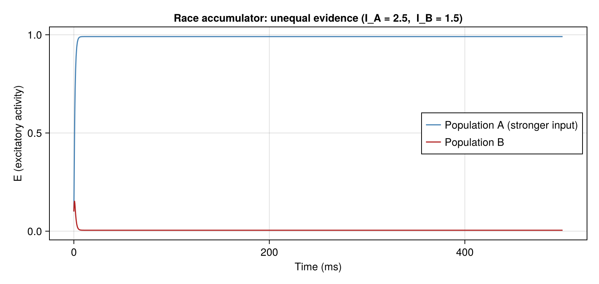
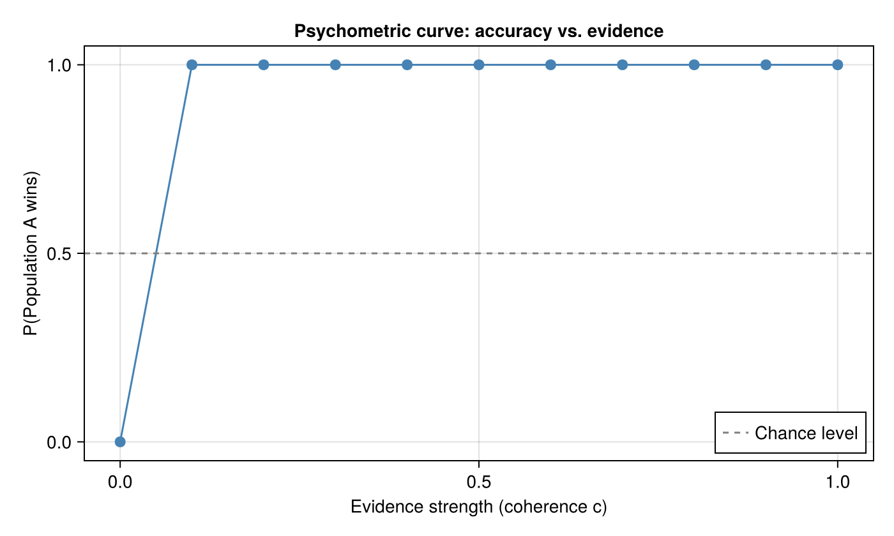
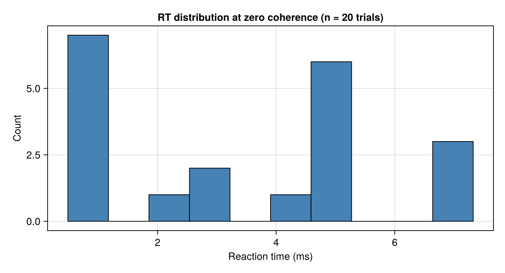

Decision Making via Competing Neural Accumulators
Introduction
How does the brain make decisions under uncertainty? A classic computational framework is the race accumulator (or leaky competing accumulator): two (or more) neural populations independently integrate evidence for each alternative and "race" to a decision threshold. The first to reach threshold determines the choice and also sets the reaction time.
Wang (2002) [1] showed that such accumulator dynamics emerge naturally from mutual inhibition between cortical excitatory populations linked through shared inhibitory interneurons. The key insight is that NMDA-mediated slow recurrent excitation acts as an integrator (τ_network ≈ 1 s), while GABAergic feedback inhibition implements the winner-takes-all competition between the two alternatives.
Note — full spiking model: The complete Wang (2002) model uses ~2000 leaky integrate-and-fire neurons with explicit NMDA, AMPA, and GABA-A receptors. This biophysical circuit is implemented in Neuroblox and demonstrated in the
decision_making.jltutorial. Here we use a mean-field approach — two competingWilsonCowanpopulations — to show the same computational principles with a fraction of the computational cost.
In this tutorial you will learn to:
- Connect two
WilsonCowanpopulations with mutual inhibition as a race accumulator. - Use
ConstantInputsources with different weights to model variable sensory evidence. - Characterize decisions as the winning population at steady state.
- Plot a psychometric-like curve: fraction of A-wins vs. evidence strength.
The Race Accumulator Model
We represent each choice option as a Wilson-Cowan E-I population with self-excitation and cross-inhibition. Sensory evidence for option A (or B) is modelled as a tonic current to population A (or B). With equal evidence both populations activate to the same level; with unequal evidence the more strongly driven population suppresses the other via mutual inhibition.
Input_A ──► Population A ◄─── mutual ───► Population B ◄── Input_B
↑ self-excitation ↑ self-excitationSetup
using Neuroblox
using OrdinaryDiffEqTsit5
using CairoMakie
using Random
using Statistics
Random.seed!(42)Random.TaskLocalRNG()Parameters for the E-I populations. We use a moderately strong recurrent excitation (c_EE = 10) so each population acts as an integrator, and strong mutual inhibition (w_AB = w_BA = 3.5) implements winner-takes-all competition.
wc_params = (
c_EE = 10.0, ## recurrent E→E excitation (integration)
c_EI = 8.0, ## E drives local inhibition
c_IE = 6.0, ## local I suppresses E
c_II = 1.0,
θ_E = 2.5, ## thresholds
θ_I = 3.5,
a_E = 1.2,
a_I = 2.0
)
w_inh = 3.5 ## cross-inhibition weight (negative sign applied in @connections)
tspan = (0.0, 500.0) ## 500 ms integration window(0.0, 500.0)Single Trial: Unequal Evidence
Apply a stronger input to population A (IA = 2.5) than to B (IB = 1.5) and observe which population wins.
@graph g_trial begin
@nodes begin
popA = WilsonCowan(; wc_params...)
popB = WilsonCowan(; wc_params...)
# `ConstantInput` provides a steady tonic drive — models sustained sensory evidence.
inpA = ConstantInput(; I = 2.5)
inpB = ConstantInput(; I = 1.5)
end
@connections begin
inpA => popA, (weight = 1.0)
inpB => popB, (weight = 1.0)
# Mutual inhibition: negative weights make the connection inhibitory.
popA => popB, (weight = -w_inh)
popB => popA, (weight = -w_inh)
end
end
u0 = [popA.E => 0.1, popA.I => 0.1, popB.E => 0.1, popB.I => 0.1]
prob = ODEProblem(g_trial, u0, tspan, [])
sol = solve(prob, Tsit5())
E_A = state_timeseries(popA, sol, "E")
E_B = state_timeseries(popB, sol, "E")
fig1 = Figure(size=(800, 380))
ax1 = Axis(fig1[1,1]; xlabel="Time (ms)", ylabel="E (excitatory activity)",
title="Race accumulator: unequal evidence (I_A = 2.5, I_B = 1.5)")
lines!(ax1, sol.t, E_A; color=:steelblue, label="Population A (stronger input)")
lines!(ax1, sol.t, E_B; color=:firebrick, label="Population B")
axislegend(ax1; position=:rc)
fig1
Population A, receiving stronger input, rises faster and drives population B toward silence via mutual inhibition. The circuit has made a "decision" — A wins.
Psychometric Curve: Accuracy vs. Evidence Strength
In the classic random-dot motion task (Wang 2002), stimulus coherence c controls the difference in firing rates driving the two selective populations: IA = I₀ + Δ·c, IB = I₀ − Δ·c
Here I₀ = 2.0 is the mean input and Δ is the sensitivity. We scan c from 0 to 1 and record whether population A or B "wins" (higher E at the end of the trial).
I₀ = 2.0 ## mean input to both populations
Δ = 1.5 ## sensitivity: how strongly coherence biases the input
coherences = 0.0:0.1:1.0
# Fraction of trials in which A wins
p_A = zeros(length(coherences))
for (k, c) in enumerate(coherences)
I_A = I₀ + Δ * c
I_B = I₀ - Δ * c
@graph g_scan begin
@nodes begin
pA = WilsonCowan(; wc_params...)
pB = WilsonCowan(; wc_params...)
iA = ConstantInput(; I = I_A)
iB = ConstantInput(; I = I_B)
end
@connections begin
iA => pA, (weight = 1.0)
iB => pB, (weight = 1.0)
pA => pB, (weight = -w_inh)
pB => pA, (weight = -w_inh)
end
end
# Add small random perturbations to the initial conditions to break symmetry at c = 0
ε = 0.02 * randn(2)
u0_k = [pA.E => 0.1 + ε[1], pA.I => 0.1,
pB.E => 0.1 + ε[2], pB.I => 0.1]
sol_k = solve(ODEProblem(g_scan, u0_k, tspan, []), Tsit5())
E_A_k = state_timeseries(pA, sol_k, "E")[end]
E_B_k = state_timeseries(pB, sol_k, "E")[end]
p_A[k] = E_A_k > E_B_k ? 1.0 : 0.0
end
fig2 = Figure(size=(700, 420))
ax2 = Axis(fig2[1,1]; xlabel="Evidence strength (coherence c)",
ylabel="P(Population A wins)",
title="Psychometric curve: accuracy vs. evidence")
scatter!(ax2, collect(coherences), p_A; color=:steelblue, markersize=12)
lines!(ax2, collect(coherences), p_A; color=:steelblue)
hlines!(ax2, [0.5]; linestyle=:dash, color=:gray, label="Chance level")
axislegend(ax2; position=:rb)
fig2
At zero coherence (IA = IB) the outcome is random (near 50%). As coherence increases, population A wins more reliably — the circuit acts as a sensory classifier. This reproduces the qualitative shape of the psychometric curves in Wang (2002), Figure 4.
Reaction Times
The race accumulator also predicts a distribution of reaction times (RT). A short RT corresponds to rapid separation of the two populations (high coherence or fortunate noise). We define RT as the time at which |EA − EB| first exceeds a threshold δ = 0.3.
function reaction_time(sol, popA, popB; threshold=0.3)
E_A = state_timeseries(popA, sol, "E")
E_B = state_timeseries(popB, sol, "E")
idx = findfirst(abs.(E_A .- E_B) .> threshold)
isnothing(idx) ? NaN : sol.t[idx]
end
# Simulate 20 trials at c = 0 (random noise determines winner)
n_trials = 20
rts_c0 = Vector{Float64}(undef, n_trials)
for k in 1:n_trials
ε = 0.05 * randn(2)
@graph g_rt begin
@nodes begin
rA = WilsonCowan(; wc_params...)
rB = WilsonCowan(; wc_params...)
iA = ConstantInput(; I = I₀)
iB = ConstantInput(; I = I₀)
end
@connections begin
iA => rA, (weight = 1.0)
iB => rB, (weight = 1.0)
rA => rB, (weight = -w_inh)
rB => rA, (weight = -w_inh)
end
end
u0_k = [rA.E => 0.1 + ε[1], rA.I => 0.1,
rB.E => 0.1 + ε[2], rB.I => 0.1]
sol_rt = solve(ODEProblem(g_rt, u0_k, tspan, []), Tsit5())
rts_c0[k] = reaction_time(sol_rt, rA, rB)
end
fig3 = Figure(size=(700, 380))
ax3 = Axis(fig3[1,1]; xlabel="Reaction time (ms)",
ylabel="Count",
title="RT distribution at zero coherence (n = $n_trials trials)")
hist!(ax3, filter(!isnan, rts_c0); bins=10, color=:steelblue, strokewidth=1)
fig3
Exercise: Compute RT distributions at different coherence levels and compare the means. Higher coherence should produce shorter mean RTs (less integration time needed) and narrower distributions. This reproduces the qualitative pattern in Wang (2002), Figure 5.
Summary
This tutorial demonstrated:
- How two
WilsonCowanpopulations with mutual inhibition implement a race accumulator. - How differential tonic inputs (
ConstantInput) model graded sensory evidence. - How the psychometric (accuracy vs. coherence) and RT distributions emerge from the competition dynamics.
The full Wang (2002) model — with ~2000 LIF neurons, NMDA/AMPA/GABA receptors, and explicit spike timing — is implemented in the decision_making.jl tutorial. It provides a more biophysically faithful account of the same decision-making circuit, including the critical role of NMDA's slow time constant as the neural integrator.
References
- [1] Wang XJ. (2002). Probabilistic decision making by slow reverberation in cortical circuits. Neuron, 36(5):955–968. https://doi.org/10.1016/S0896-6273(02)01092-9
- [2] Wong KF, Wang XJ. (2006). A recurrent network mechanism of time integration in perceptual decisions. Journal of Neuroscience, 26(4):1314–1328. https://doi.org/10.1523/JNEUROSCI.3733-05.2006
- [3] Usher M, McClelland JL. (2001). The time course of perceptual choice: the leaky, competing accumulator model. Psychological Review, 108(3):550–592. https://doi.org/10.1037/0033-295X.108.3.550
This page was generated using Literate.jl.